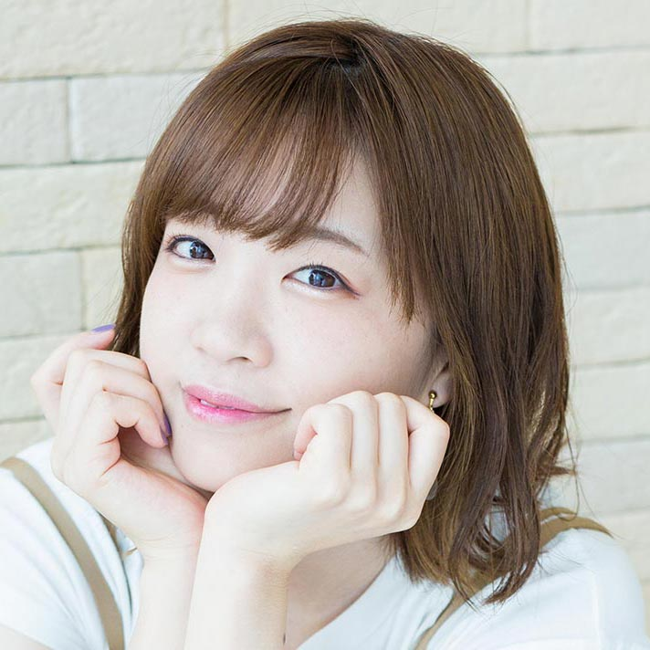

【声マガ・インタビュー】諏訪 彩花
TOPICS
PROFILE
アーツビジョンに所属する諏訪彩花さんは、愛知県出身の5月27日生まれ。『あっくんとカノジョ』（片桐のん役）、『まちカドまぞく』(小倉しおん役)、『Re:ステージ！ドリームデイズ♪』（一条瑠夏役）等に出演。2019年10月放送の『Fairy gone フェアリーゴーン 第2クール』では、クラーラ・キセナリア役で出演。
最近は、夜、何か食べながら、動画配信サービスで映画やアニメ、ドラマなどを集中して観ることがストレス解消になっているという諏訪さん。その時々でマイブームとなるジャンルは変わるそうで、ゾンビものに夢中になった時もあれば、『深夜食堂』『孤独のグルメ』など食事ものにハマったことも。鉄板は形や顔が好きというサメが出てくる作品。NGはおどろおどろしいジャパニーズホラー。そんな諏訪さんに声優をめざしたきっかけや日本ナレーション演技研究所（以下、日ナレ）で学んだこと、今後の目標について語っていただきました。
日ナレ入所当初は毎日ワクワクしていました
声優という仕事を意識したのはいつ頃ですか？
中学1年生の時にアニメ『テニスの王子様』を観て、主人公の越前リョーマくんがめちゃくちゃドストライクで、大好きになったんです。見た目も好きだし、何より声が本当にカッコよくて。皆川純子さんという女性が声をあてられていると知って、そこから声優という仕事に興味を持ち始め、声優のラジオ番組を聴いたり、声優にまつわる雑誌を買ったりするようになりました。
では、声優をめざしたきっかけを教えてください。
高校生の時、生徒会主催の3年生の送別会でミュージカルを上演することになり、主役に指名されたんです。なぜ私が主役に選ばれたかというと、当時の生徒会長が、主人公の男の子を誰にしようか悩んでいた時、ピッタリな声が聞こえてきて、それが私だったと。小学生の頃、2年間、市のプロジェクトの子どもミュージカルに出演したことがあり、演技には興味があったので、ありがたくお受けしたところ、とても楽しかったし、まわりの友達からも「良かったよ」とか「あんな声出せるんだね」ってすごく褒めてもらえて。そういえば、私は越前リョーマくんに憧れていたし、いろいろな声が出せる声優の仕事をやってみたいかもって思ったんです。でも、高校生の時は本格的にめざす勇気がぜんぜん出なくて、大学生になってから、まわりの友達に「めっちゃ応援しているから頑張りなよ」って背中を押してもらって、声優の勉強ができる養成所に入ろうと決めました。
日ナレを選んだ理由を教えてください。
住んでいた名古屋にスタジオがあって、大学に通いながらでもレッスンが受けられること、活躍されている声優の方々をたくさん輩出していること、基礎から順を追って学べることから選びました。
入所した頃の日ナレの印象について教えてください。
とにかくワクワクしていました。どんなことをやるんだろうっていう未知への好奇心もあるし、下は高校生から上は40歳くらいの方まで、普段、大学に通っているだけでは出会えない人たちと同じクラスになって、みんな個性豊かで面白い人ばかりで、その出会いにもワクワクしていました。
基礎科のレッスンはいかがでしたか？
本格的に発声練習やかつ舌を学ぶのは初めてだったので、とてもためになりました。あと、身体を動かすレッスンもあったのですが、声優の仕事は声や想像力が大事なんだと思っていた私にとって、身体づくりも大事であることなど、いろいろな発見がありました。
本科では舞台形式のレッスンが中心になると思うのですが、いかがでしたか？
いろいろな人と向かい合ってお芝居をすることはすごく刺激になりました。自分と感覚が似ている人もいれば、自分とは違うアプローチをする人もいて。反面、本当に個性的な人が多かったので、自分の無個性に気づかされ、それがコンプレックスにもなってしまいました。
どうやって克服したんですか？
悩みを打ち明けたクラスの仲間が、「逆に私は彩花みたいにできないから、彩花がうらやましいよ」って言ってくれて。それに、レッスンで自分の演技を披露して、クラスの仲間たちに評価してもらっているうちに、自分の武器に気づけたんです。あと、講師の方に言われた「人と比べたり、真似をしなくていい」という言葉も励みになりました。私はどうしても人と比べてしまうところがあったのですが、自分は自分でいいんだって。それからは、自分がこうしたいと思ったことを大切に、自分を伸ばしていこうと思えるようになれました。みんながいてくれて本当に良かったと感謝しています。
事務所に所属したのはいつですか。
本科の終わりに受けた所内オーディションに合格し、アーツビジョンに所属しました。
合格後の生活サイクルを教えてください。
大学に通いつつ、週1回、日ナレに通い、月に2回ほどオーディションを受けるために上京していました。
合格後も、声優の仕事と並行して日ナレの研修科で学ばれていますが、レッスンを受けるうえで気持ちの変化はありましたか。
自分の中で恥じない演技、納得いく演技をみんなの前で発表したいと、それまで以上に強く意識するようになりました。事務所に所属して、オーディションに落ちる経験もするようになっていたので、実践に活かせるように、仕事につながるようにって、基礎科や本科の時よりも、より真剣に取り組むようになっていたかもしれません。
憧れの先輩方と共演し、プロになったことを実感
初めてマイク前に立った時のことを教えてください。
OVAの『グラール騎士団 Evoked THE Beginning White』という作品でした。自分が観ていたアニメに出演されていた声優さんたちがいっぱいいらして、同じ空間に私がいていいんですか？っていう気分で、めちゃくちゃ緊張しました。でも役柄が、緊張しながら先輩にタオルを渡す女子生徒で、セリフはたった一言、「先輩、タオルどうぞ」だったのですが、状況的にはその時の自分のポジションそのままだったので(笑)、気持ちのまま演じられました。
やり終えた後はどんな気持ちになりましたか？
収録中はとにかく緊張していたけれど、自分が先輩方と同じ現場に立てたことで、本当に声優になれたんだという実感が、後から湧いてきました。
憧れの先輩方と同じ現場に立てるのは嬉しいですよね。
はい！ その後、初めてアニメのレギュラー作品『超速変形ジャイロゼッター』で、主人公の男の子たちより遥かに年上のセクシーな秘書・河野サキ役をいただいたんですが、今度は、主人公の男の子たちを演じるのが大先輩方で、その大先輩方に向かって「お前たち行きなさい！」なんて命令しちゃう役で（笑）。そんなにキャリアのない私が、先輩に向かってどうしよう、貫禄出さなきゃって、かなり動揺しました（笑）。でも、皆さん励ましてくださったり、アドバイスしてくださったり、本当に温かい現場で、1年間、楽しく演じることができました。年齢の上下関係なく、役柄を演じられるのも声優の仕事のおもしろさですよね。
そのほか、デビュー当時の作品で印象に残っているものはありますか。
『超速変形ジャイロゼッター』と同時期に出演した『弱虫ペダル』の寒咲幹役は、すごく長台詞が多くて、できないことへの悔しさとか、落ち込んだ日も多かったのですが、その分、めちゃくちゃ鍛えていただきました。これもまた、先輩方がズラリといる中で、リテイクを繰り返してしまって(苦笑)。でも、皆さん私がリラックスできるよう温かく見守ってくださって、とても助けられたのを覚えています。マイクに入るタイミングとか、どこのマイクに行けば邪魔じゃないかとか、マイク前では考えなければいけないことがいっぱいあるのですが、場をこなすうちにだんだん慣れてきて、全体を見られる余裕ができてきたのもこの頃だった気がします。
2014年のアニメ『悪魔のリドル』では、初めて主役・東兎角役に抜擢されましたね。
この作品をきっかけに諏訪彩花の存在を広く知ってもらうことができましたし、お芝居とがっつり向き合って取り組んだ作品で、学んだこともめちゃめちゃ多いので、間違いなく、私の声優人生の中で、大きな一歩を踏み出すことができた作品になりました。
人の心を揺さぶることのできる声優に
お仕事をするようになって、日ナレで学んだことが活きていると実感できることはありますか？
いろいろな人と一緒にお芝居をした経験ですね。芝居の中で普通に会話するって意外と難しいんです。それをたくさん経験できたし、人と対峙することで、自分の特徴や個性がちょっとずつ発見できたし、刺激をもらうこともできました。演技について悩んだこともいっぱいあったけど、悩んだ時間のすべてが今、力になっていると思います。あと、基礎科で感情を解放することを学んだのですが、それってすごく大事だって、今、痛感しています。緊張してうまく演じようとすると、楽しいより疲れを感じるんですが、自然といいお芝居ができたなって思えた時って、すごく楽しいんです。なぜかというと、心から、自然と感情を解放することができているからなんですね。初めて仕事の現場でそれを感じた時、日ナレで言われてたことってこれなんだ！って思いました。
ご自身の考える声優の仕事の魅力について教えてください。
クールでカッコイイ役から、元気で活発な役など、幅広く演じさせていただいているのですが、私自身、いろいろな役にチャレンジしたいと思っているので、そういう機会をいただけて、今、すごく幸せです。
今後、どんな声優になりたいか教えてください。
先輩たちの演技を見ていて、人の心を揺さぶる演技ができる役者さんってすごいなって思うんです。魂がこもった演技っていうのかな。生きているセリフってすごく素敵ですからね。そういうことができる役者さんになりたいです。
そのために心がけていることはありますか？
リラックスして、自分が感じたものを自分が思う以上に思いっきり出すことです。自分で思いっきり出したと思っても、実はぜんぜん足りていないことって多くて、自分が思っている以上にやった時、まわりからいい演技だねって言ってもらえるので。
最後に声優をめざしている方へメッセージをお願いします。
声優をめざす過程では、悩みを抱えたり、壁にぶつかったり、自信を失うこともいっぱいあると思います。でも、決して消極的にならないで、自分は大丈夫っていう強い気持ちを持って、怖がらずに思いっきり、夢に向かって挑み続けてほしいと思います。自分が信じたものを思いっきり表現していれば、きっと誰かが見てくれたり、評価してくれたりすると思うので、怖がらずに頑張っていろいろなことにチャレンジしてください！
プロフィール
諏訪 彩花
- 所属事務所
- アーツビジョン
主な出演歴
- Fairy gone フェアリーゴーン（クラーラ・キセナリア）
- ブギーポップは笑わない（紙木城直子）
- あっくんとカノジョ（片桐のん）



{kind=link}
{kind=link}
{kind=link}
{kind=link}
{kind=link}
{kind=link}